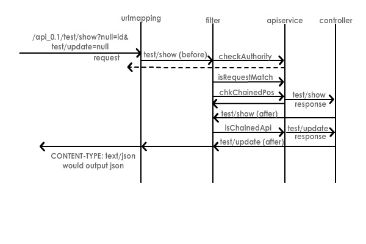

What is API Chaining(tm)
Quick Definition : API Chaining(tm) is a functional I/O Monad allowing one api call to return data into another api call which returns data into another api call , etc etc, all within ONE REQUEST/RESPONSE. This is allowed through the abstraction of communication logic from business logic through the New API Pattern. This is limited in the fact that you can only use GET as the connectors in the chain and one other 'non-safe' method (ie PUT/POST/DELETE) at either the beginning or the end of the chain (as determined by the REQUEST method).
We have all used encoded GET data when sending form data via a POST request. This is considered common practice. Why? Because GET is idempotent and SAFE. Because it is SAFE (meaning it doesn't change data), it is commonly used with other types of requests as a mixed request. This may not be RESTful but it is considered normal and not unsafe. This is what I like to refer to as a single link chain since it has only one link which is the same as it's destination request.
API chaining extends upon this principle in the fact that you can encode GET data in the URL but pass a POST/PUT/DELETE request (much like post GET with a POST form) to chain the request TO or FROM the request method destination link. This can be used to imply GET requests chained TO a final request link (known as a post- chain) or FROM a request link to other implied GET links (known as a pre-chain).
The reason why this is better than practives like HATEOAS/HAL is that it doesn't rely on the link for the relationship... it relies on a common API Object. By relying on a common API Object to handle and validate the request/response and apply rules, links only become a reference point for data.
For example, when we make our PUT/POST/DELETE requests we can do :
- a post-chain request : a GET request that return the data, then specifies the key we wish to pass to the next 'link' in the chain which will make a GET request returning data, etc until the final request method is matched. This can be illustrated as follows:
GET > GET > PUT - a pre-chain request : same as a post chain request except the request method is matched in the beginning and then sends and id to the GET methods after it is called. This can be illustrated as follows:
POST > GET > GET - a blank chain (aka 'GET' chain) : a blank chain has no additional method; it is merely a series of chained GET requests. Basically this takes the returned data from one GET and you give the KEY to get the data for the next GET request in the chain (just like in other chains).
GET > GET > GET
NOTE: Pre and Post chain example can happen with any method including DELETE; A Delete method can delete data or just render it 'inactive' so passing the ID to a GET method afterward can be useful to get related data or to confirm the state.
API Chain Examples
POST Post-Chain Example (minus the data)
The POST post-chain would be encoded as follows:
{
...[your_data_being_sent]...
chain:{
key:dept_id,
combine:'false',
type:'postchain',
order:{dept/show:company_id,company/update:return}
}
}
And then call via Curl(or via javascript) as follows:
curl -v -H "Content-Type: application/json" -H "Authorization: Bearer [access token]" -X POST -d "{'chain':{'key':'dept_id','combine':'false','type':'postchain','order':{'dept/show':'company_id','company/update':'return'}}}" "http://localhost:8080/v0.1/person/show/1"
If you need to send Max/Offset variables, do so as follows:
curl -v -H "Content-Type: application/json" -H "Authorization: Bearer [access token]" -X POST -d "{'chain':{'key':'dept_id','combine':'false','type':'postchain','order':{'dept/show':'company_id','company/update':'return'}}}" "http://localhost:8080/v0.1/person/show/1?max=1,1,1&offset=0,0,0"
How Does It Work?
Keeping in mind REST methodology, some methods won't return data but some will. In a chain, we want ALL methods to return data (at least the ID for the dataset/modelMap used). That way we can pass it to the next link in the chain.
The developer can return the ID or a full dataset depending on the functionality they wish to implement and neither will break the API; one just returns additional data that will be irrelevant to the next link in the chain.
NOTE: Keep in mind that no data or a NULL makes it unusable for webhooks/realtime notifications as well as api chains.
Benefits of API Chaining(tm)
But why use API Chaining you may ask? Why not just make each individual request separately? Well API Chaining has benefits over traditional methodologies in the following waysReduces Data Being Sent
- PROBLEM : In HATEOAS/HAL, all link relations must be returned with each api call; this creates large data returns / processing overhead.
- SOLUTION : API chaining knows all possibilities; no additional data needs to be returned as it puts the burden upon the user to chain the calls. If chains need to be chown, they can be output and cached with the apidocs so users can view them through OPTIONS
Unlimited Linking
- PROBLEM : HATEOAS/HAL link relations limit what can be called
- SOLUTION : API chaining knows all possibilities that can be chained and allows chains based upon ROLES/Authorities and predefined return data as defined in apidocs
One Request Handles Multiple API Requests
- PROBLEM : Multiple API requests can take up additional processing/overhead on your server.
- SOLUTION : Through API chaining, one api request call can handle multiple responses by forwarding additional calls internally, handling role checks and then returning data or handling processing. In regular usage, this can reduce API calls by at least 50%.
Reduced Link Coding
- PROBLEM : HATEOAS/HAL link relations require developer to code all possibilities
- SOLUTION : API chains are dynamic. No coding required by client or developer
Reduced Client/Server Coding
- PROBLEM : All api calls have to be coded, returned, processed by client
- SOLUTION : API chains handle all calls in a loop reducing client and server coding.
Api Chain Branching
- PROBLEM : Link relations do not allow for end user to branch off them
- SOLUTION : API chains can be branched or chained off of using the 'return' statement in the chain. Once the chain has stopped and return, the original chain can be restarted at the point it stopped and branch chains can be started with the returned data
ID Security
- PROBLEM : Do Not want to show IDs when passing data
- SOLUTION : Only the first ID is needed in the chain and chains CAN be dynamically created. If chains are dynamically created and secured through privileges/roles, this creates a process for accessing related data through the relationship without exposing the ID since the ID's are always exposed to the backend but will not be available to requesting services.
Questions about API Chaining(tm)
While API Chaining has received nearly 100% positive feedback, there has been reservation due to implementation
- Why can't we use unsafe methods in the middle of a chain?
As only data for one method can be sent, we can only support one unsafe method. By allowing unsafe methods in the middle, it is possible for someone to double send an unsafe method by sending to the exact same method TWICE by looping back around to it. This is bad practice and is better handled by forking the chain.
- Doesn't API Chaining exposes ID's allowing users to freely see all your data and data structure?
API Objects allow you to define how a URI i accessed so you can define NO ID at all but still have it return data; this means that it cant be accessed DIRECTLY but can be accessed through a chain as the BACKEND handles the relationship if you have access the the API. Thus ID's/indexes are only required on the first link in he chain
- Doesn't HATEOAS/HAL actually have the ability to link to other links?
HATEOAS/HAL does urlmapping. URLMapping is not the same thing as you HAVE to send all ID's rather than relying on a relationship. This is effectively HARDCODING. API Objects, on the other hand, create relationships between the URI's themselves.
- How can it access the following links in the chain? Only the first one is called as an API
The first link is handled as the REQUEST and all other are looped in the communication layer until the end is reached, an error occurs or the chain returns on its own. As such, it always stays within that original REQUEST/RESPONSE. The matching REQUEST Method in the chain is what is looked for (which is why you can't have more than one UNSAFE method in the chain). Once it finds it, it will return.